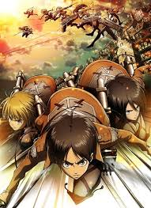
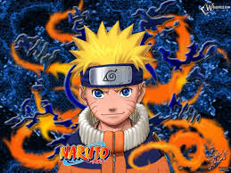
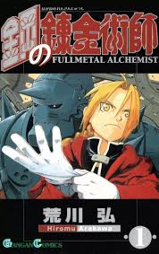

Сюжет відбувається у світі, де людство живе всередині міст оточених величезними стінами.



Вперше манґа опублікована у 1999 році у 43-му томі японської версії журналу Shonen Jump.
«Сталевий алхімік» розповідає історію братів Едварда та Альфонса Елріків